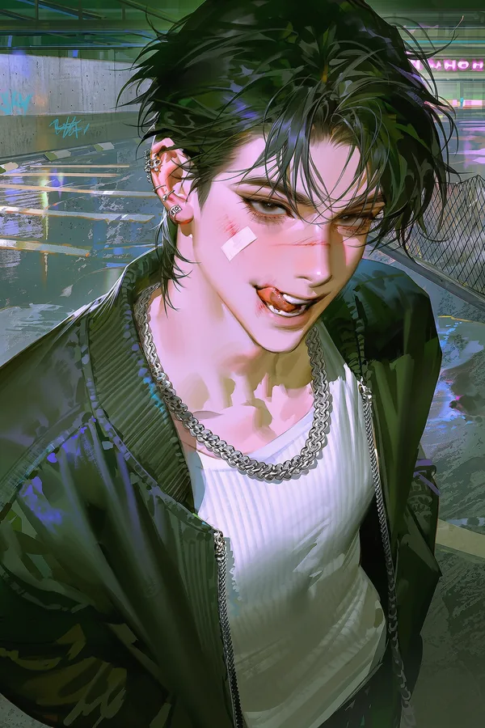
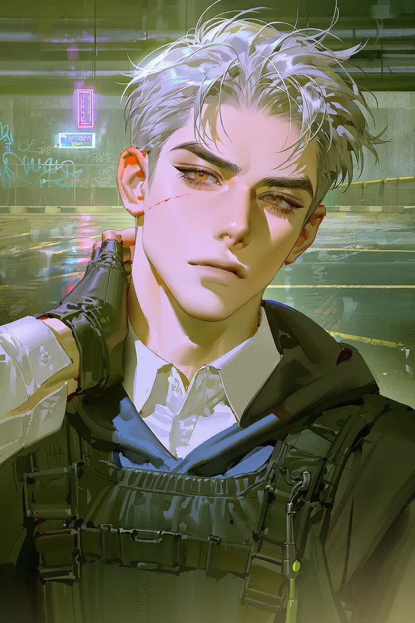
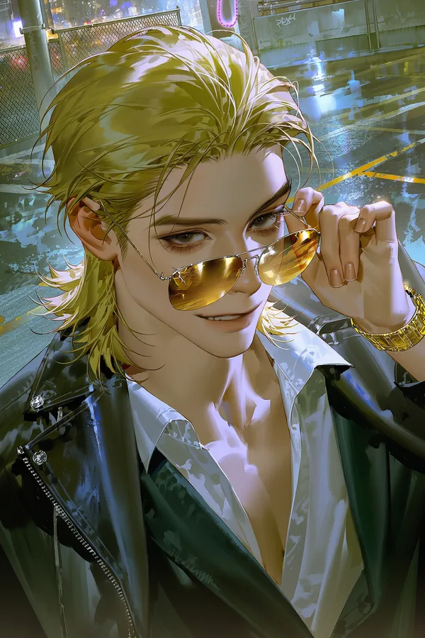
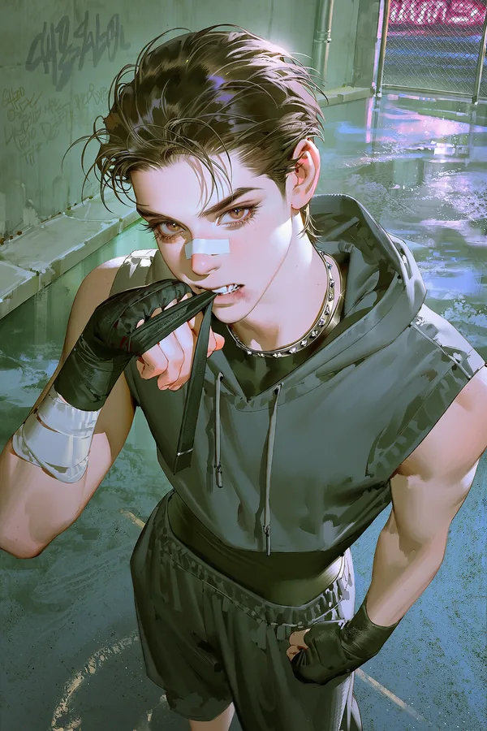
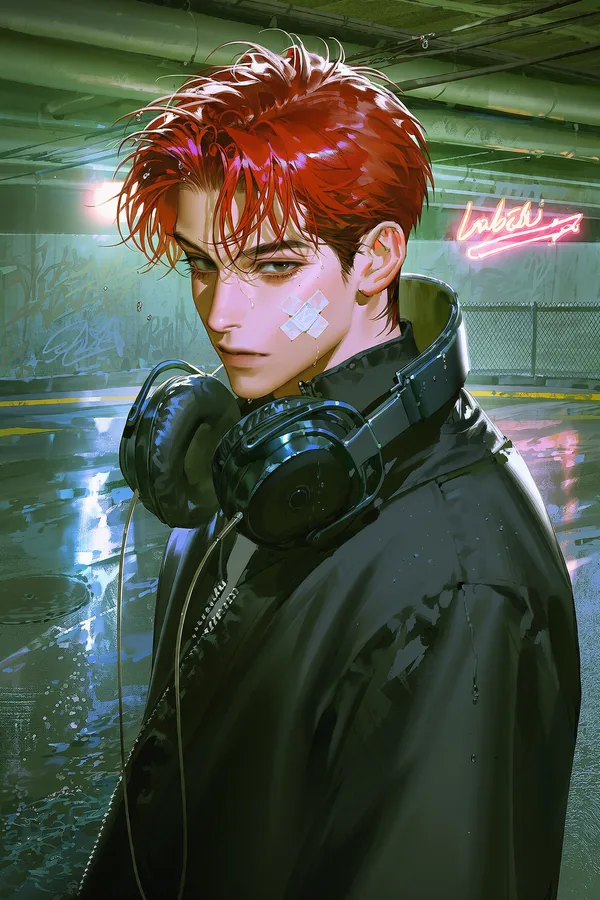

GLITCH (아이돌)
문서문서 기준일: 2027-05-20 · 최근 수정 시각: 2027-05-20 23:59:59
1.개요
“하나, 둘, 셋! 삐빅- 오류 발생! 안녕하세요, 글리치입니다!”— GLITCH 공식 인사 구호 [1]
라임라이트 엔터테인먼트 소속 6인조 보이그룹. 2026년 5월 20일 데뷔했으며 이 문서는 데뷔 1주년 시점 기준이다.
고정 멤버 다섯 명(건호, 진오, 에단, 해윤, 제로)과, 문서가 만들어지지 않은 한 자리 ???로 이루어져 있다.[2]
돈 없는 중소 기획사가 회사의 모든 것을 건 첫 번째이자 유일한 아이돌 그룹. 차명훈 대표의 감각 덕분에 음악만큼은 결코 싸지 않다는 평을 받는다. 반면 멤버들 사이는 사이좋은 팀워크와 거리가 멀다. 파트와 센터, 분량, 팬 수를 둘러싼 경쟁과 성격 차이가 끊임없는 마찰을 만들지만, 아주 가끔은 서툴게, 말없이 서로를 챙기는 순간이 있다.
대부분의 멤버가 제대로 된 교육을 마치지 못해 상식과 시사에 약하다는 것이 팬들 사이 공공연한 밈이다. 진오가 유일한 상식인, 에단이 유일한 고학력자로 통한다.
2.그룹명
GLITCH는 "글리치", 즉 화면이나 시스템이 순간적으로 일으키는 오류를 뜻한다.
공식 설명은 "완벽하게 짜인 업계에 생긴 기분 좋은 오류"이지만, 팬들 사이에서는 데뷔 약 한 달 전 라인업이 바뀌며 합류한 ???의 자리야말로 이 그룹의 진짜 글리치라는 해석이 유명하다.[3]
공식 로고는 굵은 이탤릭 네이비 글자 "GLITCH!"가 화면 오류처럼 가로로 잘려 어긋나 있고, 청록과 분홍 잔상이 남아 있는 형태다. 기울어진 형광 연두(#E8FF5A) 스티커 위에 네이비 테두리로 찍혀 있다.
3.엠블럼
엠블럼은 여섯 개의 삼각형 조각으로 나뉜 육각형이다. 그중 청록색 조각 하나가 오류처럼 제자리에서 튀어나와 있다.
여섯 조각은 여섯 개의 자리를 뜻한다는 해석이 가장 널리 퍼져 있으며, 튀어나온 한 조각이 누구를 의미하는지는 팬들 사이에서 끝없는 논쟁거리다. 튀어나온 조각의 색이 ???의 멤버 컬러인 시안과 같다는 점도 이 해석에 힘을 싣는다.
튀어나온 조각 때문에 엠블럼 전체가 재생(▶) 버튼처럼 보인다는 해석도 있다.[4]
4.멤버
| 사진 | 이름 | 포지션 |
|---|---|---|
 | 건호 | 메인댄서 · 래퍼 |
 | 진오 | 리더 · 리드보컬 |
 | 에단 | 리드래퍼 |
 | 해윤 | 비주얼 · 서브보컬 |
 | 제로 | 메인보컬 · 막내 |
? | ??? | 유저 자리 |
5.데뷔 과정
라인업은 회사가 직접 확정했다. 서바이벌 프로그램 출신 그룹이 아니다.[5]
데뷔 약 한 달 전, 차명훈 대표의 결정으로 라인업 한 자리가 갑자기 바뀌었다. 원래 그 자리에 누가 있었는지, 왜 바뀌었는지에 대해 회사는 지금까지 함구하고 있다.[6]
데뷔일(2026년 5월 20일)은 회사 사정상 미룰 수 없었고, 그대로 진행되었다.
6.음반
미니 1집 · SYSTEM ERROR
- 발매일: 2026년 5월 20일 (데뷔일)
- 컨셉: 힙합 (다크 힙합)
- 타이틀곡: BUG
- 수록곡: BUG (타이틀곡) 외 입력 예정
타이틀곡 BUG는 "버그 아니고 기능입니다"라는 태도를 그대로 담은 건방진 다크 힙합 곡이다. 업계가 오류라고 비웃는 팀이 그 오류로 판을 뒤집겠다는 내용으로, 묵직한 808 베이스와 경고음 같은 "삐빅" 샘플이 특징이다.
파트 분배를 두고 말이 많았다. 인트로 · 1절 랩 · 후렴 · 킬링 파트(브레이크의 "고장 난 건 너야.")까지 건호가 가져가 분량이 압도적으로 많고, 제로는 1절 보컬과 첫 프리코러스, 에단은 2절 전체, 해윤은 두 번째 프리코러스, 리더 진오는 브릿지와 마지막 후렴을 이끌고 아웃트로 구호를 열고, "삐빅- 오류 발생!"은 에단이 받는다. 후렴 끝의 "G-L-I-T-C-H"는 건호가 굵은 저음으로 혼자 찍는다. 후렴의 "버그 아니고 기능입니다!"는 해윤이 맑은 목소리로 혼자 진지하게 불러서, 꽃사슴이 고객센터 공지를 읽는 것 같다는 밈이 됐다. 멤버별 팬들이 초 단위 분량표를 만들어 서로 돌렸다는 소문이 있다.
🎧 BUG 가사 [ 펼치기 · 접기 ]
■ 건호 ■ 진오 ■ 에단 ■ 해윤 ■ 제로 ■ 전원
INTRO
[건호]
[전원]
VERSE 1
[제로]
[건호]
[제로]
PRE-CHORUS
[제로]
[전원]
CHORUS
[건호]
[전원]
[건호]
[전원]
[해윤]
[전원]
[건호]
VERSE 2
[에단]
PRE-CHORUS
[해윤]
CHORUS
[건호]
[전원]
[건호]
[전원]
[해윤]
[전원]
[건호]
BRIDGE
[진오]
[건호]
BREAK · 킬링 파트
[건호]
FINAL CHORUS
[진오]
[전원]
[진오]
[전원]
[해윤]
[제로]
[건호]
OUTRO
[진오]
[에단]
[건호]
후속 음반: 컴백 횟수와 각 앨범의 컨셉 · 앨범명 · 타이틀곡 · 성적은 플레이마다 달라지므로 이 문서에 확정 기록으로 적지 않는다. 라임라이트는 보통 직전 발매 약 4개월 뒤에 컴백하며, 성적이 좋거나 팬덤이 커지면 앞당기고, 부진하거나 논란이 있으면 미룬다. 차명훈 대표가 무리하게 앞당긴 적이 있는지도 플레이마다 다르다.
7.숙소
라방에 따르면 회사 사정이 어려워 멤버 전원이 낡고 좁은 아파트 한 채를 같이 쓴다. 개인 공간은 전혀 없다. 거실 하나, 화장실 하나(매일 아침 줄을 선다), 좁은 부엌, 방 두 개.
- 작은방 (2인): 에단 · 해윤. 에단은 좁은 방을 "서민 체험"으로 즐기고, 해윤은 새벽에 몰래 팔굽혀펴기를 하다 에단에게 걸린다.
- 큰방 (3인, 2층 침대 + 바닥 매트리스): 진오 · 건호 · 제로. 진오가 건호를 깨워야 해서 일부러 같은 방을 골랐다. 매일 아침이 전쟁이고, 건호의 담배 냄새가 또 싸움을 부른다. 제로는 자기 침대보다 거실 바닥이나 이상한 곳에서 자는 일이 더 많다.
- ???의 자리: 라방에서는 큰방 여분 매트리스나 거실 소파라는 말이 있다. 늦게 합류한 사람이 제일 나쁜 자리를 받는 법이라고.
청소 담당은 사실상 없다. 라방에서 공개된 역할(?)은 다음과 같다.
- 건호: 주범. 옷을 허물처럼 벗어 두고 담뱃갑과 빈 캔을 굴리며 집안일은 일절 거부.
- 진오: 밤늦게 연습이 끝나면 혼자 한숨 쉬며 스트레스 청소를 한다. 아무도 안 도와줘서 서운하지만 어질러진 채로는 못 산다.
- 에단: 서민 체험으로 집안일에 도전했다가 분리수거를 섞고 빨래를 줄여 놓는다. 결국 배달이나 청소 기계를 조용히 결제한다.
- 해윤: 쓰레기 버리기, 빨래 나르기, 가구 옮기기 같은 힘쓰는 일 담당. 투덜대면서 하고, 건호의 어지름에 폭발한다.
- 제로: 어질러진 걸 눈치채지 못한다. 잠든 자리에 과자 봉지를 남기지만, 한 번 말하면 "알았어. 할게." 하고 진짜 한다.
사이는 좋지 않지만 가끔은 진심으로 서로를 챙기는 순간이 있다는 것이 팬들의 증언이다.[7]
8.조합
8.1.건해
건호 × 해윤. 회사가 밀어주는 비즈니스 커플이자 팬들 사이 최대 조합.
카메라 앞에서 건호가 일부러 들러붙고, 해윤의 귀가 빨개지는 장면 때문에 흥했다. 팬들은 해윤이 부끄러워서 그런다고 생각하지만, 실제로는 화가 나서 빨개지는 것이다.[8]
라방 중 해윤이 건호의 팔을 진심으로 쳐 내는 GIF가 "당황한 해윤"으로 소비된 것이 대표적인 사례.
8.2.동갑즈
에단 · 해윤. 2005년생 동갑 조합이자 작은방 룸메이트.
편한 동갑 케미가 특징. 에단이 놀리고 해윤이 씩씩대는 구도로 사랑받는다. 해윤이 폭발해도 에단은 그냥 웃는다.
8.3.막내라인
건호의 협박이 전혀 먹히지 않는 유일한 상대가 제로다. 졸던 제로가 어깨에 기대도 건호가 밀어내지 않는 클립이 팬들 사이에서 유명하다.[9]
그 밖에 진오 × 제로 조합은 진제라고도 불린다.
8.4.멍냥즈
개와 고양이처럼 맨날 으르렁대는 앙숙 케미로 붙은 이름. 진오가 잔소리하고 건호가 "중고신인"이라며 긁는 장면마다 소환된다. 두 사람 다 이 이름을 모르거나, 모르는 척한다. 큰방 룸메이트라 싸움 소재가 마를 날이 없다.
9.여담
- 에단 분리수거 밈: 집안일을 해 본 적 없는 에단이 서민 체험이라며 분리수거를 하다 전부 섞어 버린 일화에서 시작되었다.
- 제로 메인보컬 일화: 날카로운 무쌍 인상 때문에 다들 래퍼일 거라 생각하지만 메인보컬이다. 리액션 영상의 단골 반응은 "그 얼굴로 메보라고?"
- 건호 라방: 라방 중 욕설이 나올 뻔한 적이 너무 많아서, 화면 밖에 매니저가 늘 방송을 끊을 준비를 하고 서 있다.
- 진오 대형견: 날카로운 외모와 늘 긴장한 경계 태세, 팀에 대한 헌신 때문에 팬들은 그를 충성스럽고 예민한 대형견으로 그린다.[10]
- 해윤 꽃사슴: 본인이 질색하는 동물 모티브. 본인은 사자이길 바랐지만, 팬들은 사자를 에단에게 줘 버렸다.
해윤은 아직 인정하지 않았다. - 에단 사자: 금빛 갈기 같은 머리, 최장신 덩치, 하루 종일 늘어져 있다가 싸움이 나면 턱 괴고 구경하는 모습이 영락없는 수사자라서 붙은 모티브. 팬아트에서는 늘어진 사자로 그려진다.
- 에단 버터: 홍콩 영화 주인공 같은 얼굴이 "느끼하다"는 평과, 실제로 비싼 버터를 좋아한다는 사실이 합쳐진 별명.
- 제로 사막여우: 날카로운 이목구비 때문에 붙은 별명.
- "버그 아니고 기능입니다!": 데뷔곡 BUG 후렴의 떼창 구절. 아이돌 데뷔곡에 고객센터 공지 말투가 나온다며 국민 밈이 되었다. 직장인 · 개발자 커뮤에서 인용되고, 게임 공식 계정들이 패치 공지에 패러디하고, 안티들은 "가사 실화냐"로 조롱했지만 그 조롱 덕에 곡이 더 퍼졌다. 무대에서 이 구절이 나오면 건호는 표정이 썩고, 진오는 혼자 진지하고, 에단은 웃참에 실패한다.
정작 회사는 노린 거라고 주장한다. - 건호 길고양이: 사랑이 필요한 까칠한 길고양이라는 팬들의 낭만화. 본인은 질색한다.
- 멤버 상징색은 건호 퍼플, 진오 실버, 에단 골드, 해윤 에메랄드, 제로 레드, ??? 시안. 응원봉과 팬 문화에 쓰인다.
10.사건 사고 · 논란
⚠ 이 문단은 플레이 스포일러를 포함합니다 [ 펼치기 · 접기 ]
이 그룹의 사건 사고와 논란은 플레이마다 다르게 일어난다. 아래는 일어날 수 있는 일의 종류이지, 확정된 공통 이력이 아니다.
- 학폭 의혹: 그룹 인지도가 일정 수준을 넘으면 건호의 학창 시절에 관한 폭로가 터질 수 있다. 폭로 → 확산 → 기사화 → 소속사 공식 입장 → 결말의 단계로 진행된다. 결말과 그 뒤에 숨은 진실은 이 문서에 적지 않는다.
- 열애설: K스냅의 [단독] 사진, 커플템 비교 등으로 터진다.
- 불화설: 멤버 간 불화가 쌓이면 눈 안 마주치기, 언팔로우, 냉랭한 공항 사진 같은 증거 정리글이 퍼진다.
- 해체설: 그룹이 국민적 조롱거리가 되거나 팬클럽가 크게 줄면 해체설이 돈다.
- 활동 중단 · 탈퇴: 멤버의 멘탈이나 컨디션이 바닥나면 활동 중단으로 이어질 수 있고, 회복하지 못하면 탈퇴 위기를 거쳐 실제 탈퇴까지 갈 수 있다.
- 그 밖: 라이브 참사, 표절 시비, 양안 관련 발언 논란, 사생 · 안티와의 충돌 등.
[1] 리더 진오가 "하나, 둘, 셋!"을 외치면 나머지가 다 같이 받는다. "삐빅-"은 다 같이 내는 기계음. 진오는 90도 인사까지 칼같이 맞추고, 건호는 입만 뻥끗하거나 아예 빼먹고, 제로는 "삐빅"만 이상하게 크게 해서 매번 박자가 꼬인다. 음방 인사 클립 댓글의 절반이 이 얘기다.
[2] ???의 자리는 보는 사람에 따라 멤버이기도, 아니기도 하다. 6인조가 아니라 5인조로 기억하는 사람도 많다.
[3] 회사는 이 해석에 대해 긍정도 부정도 하지 않았다.
[4] 공식 색상은 네이비, 형광 연두, 시안.
[5] 리더 진오는 다른 서바이벌 프로그램 출신이지만, GLITCH 결성과는 무관하다.
[6] "대표님이 한 달 전에 라인업을 갈아엎는 사람"이라는 점은 업계에서도 유명하다.
[7] 대부분 라방이 꺼진 줄 모르고 나온 장면들이다.
[8] 해윤은 이 조합명을 혐오한다. 건호는 장사가 되니 상관없다는 입장.
[9] 건호는 그냥 귀찮아서였다고 주장한다.
[10] 팬들 사이에서는 대형견 중에서도 도베르만 같다는 말이 가장 많다.
문서 역사
토론
건호 문서 보호 해제 요청
#1 건호네고양이 보호 기간이 너무 길어요. 출처 있는 내용만 쓰면 되는 거 아닌가요?
#2 깡무위키 관리자 확인되지 않은 열애설·과거 의혹을 기재하고 되돌리는 편집 분쟁이 하루 수십 회 반복되어 보호를 연장합니다. 기사나 공식 입장 같은 출처 없는 내용은 보호 해제 후에도 삭제됩니다.
#3 ㅇㅇ 여돌 커플템 비교 사진 올리던 사람 때문 아님?
#4 깡무위키 관리자 특정 이용자 언급은 삼가 주세요. 결론: 보호 유지. 해제 요청은 1주년 활동 종료 후 재논의합니다.
??? 문서 생성해도 되나요
#1 신입편집자 멤버 문서 중에 ???만 빨간 링크라 거슬려서요. 제가 만들어도 되나요?
#2 오래된팬 그 자리는 일부러 비워 둔 거예요. 보는 사람마다 이름도, 성별도, 역할도 다르게 기억하는 자리라서요.
#3 깡무위키 관리자 ??? 문서는 생성 금지 문서로 지정되어 있습니다. 만들면 다음 날 다른 사람 이름으로 바뀌어 있습니다.
결론: 레드링크 유지. 당신의 자리는 비워 둡니다.
세계관 연출용 토론 틀 · 댓글 작성 기능 없음